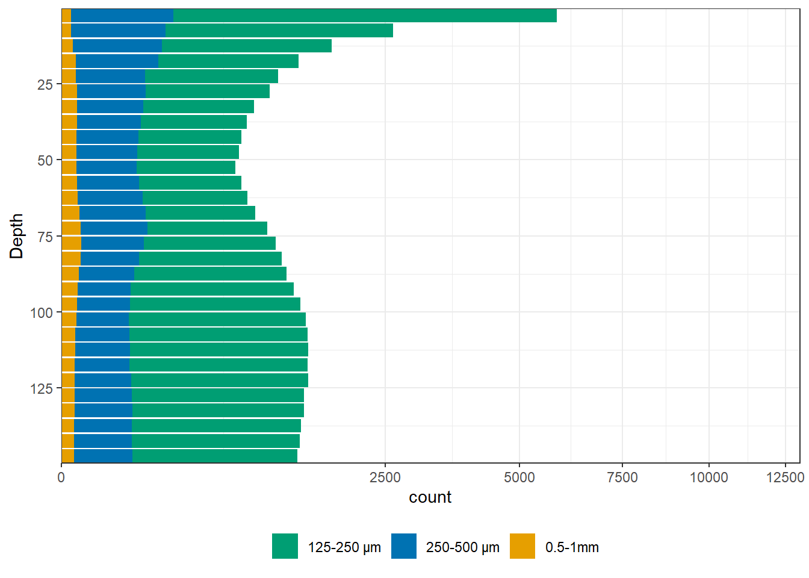
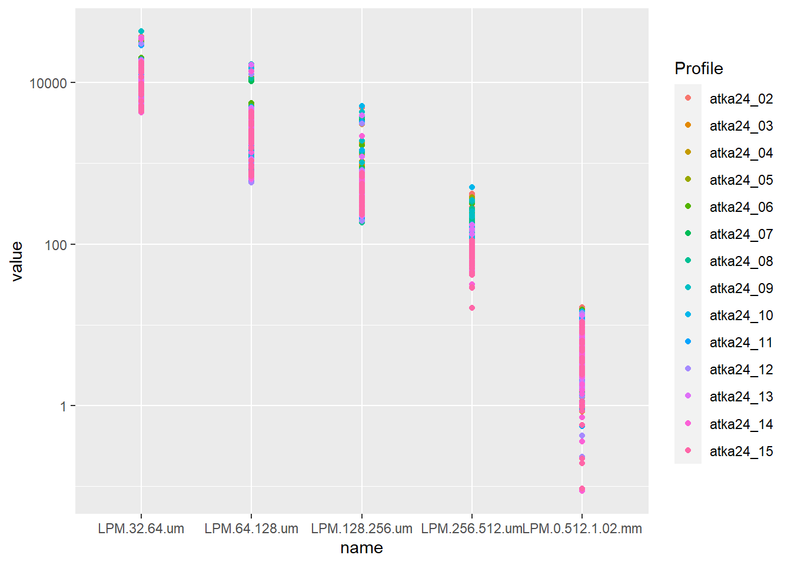
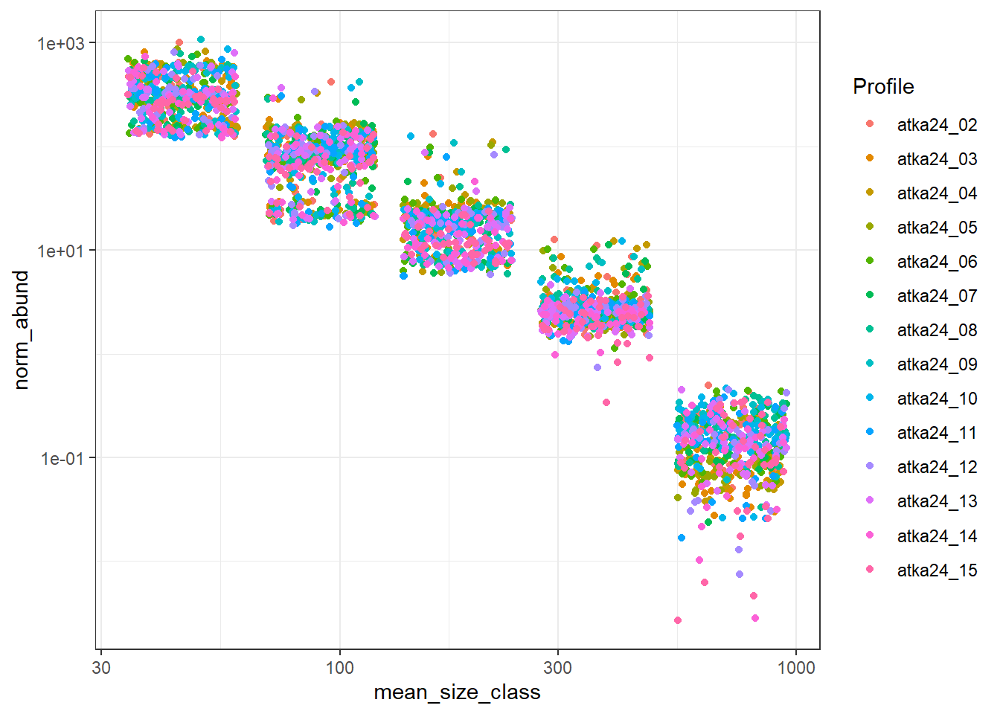
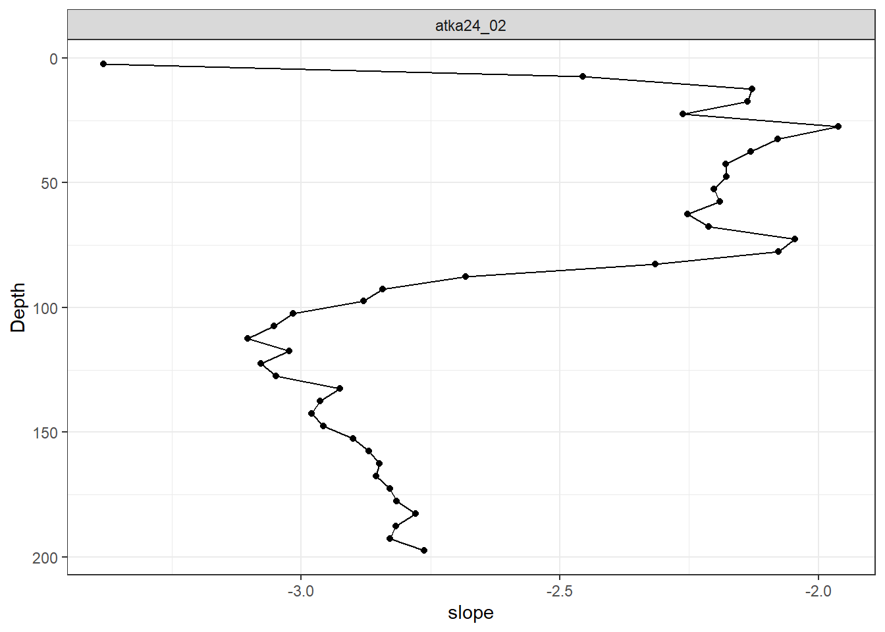
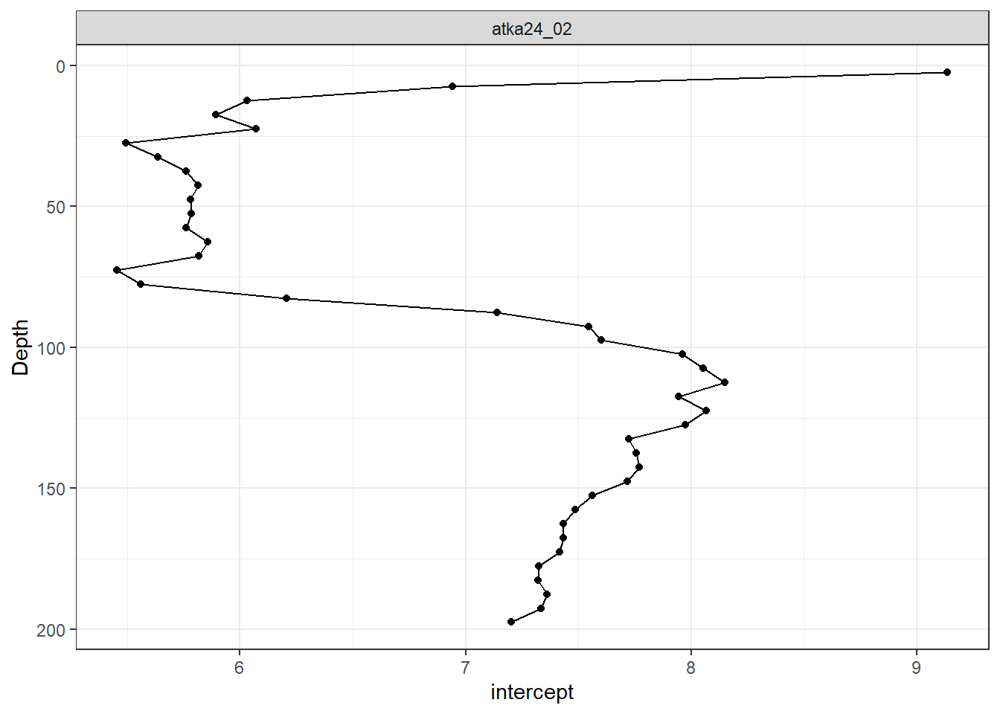
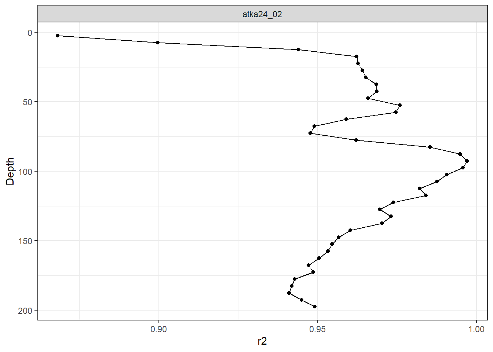

#load libraries
library(janitor)
library(tidyverse)
library(data.table)
library(here)ATKA24 Particle Analysis
Introduction
The following analysis is developed using UVP6 particle data from the ATKA24 expedition. Particles are derived from the detritus category, following identification and removal of zooplankton in eco-taxa. The goal of this analysis is to investigate patterns of aggregation/fragmentation using particle size distribution (PSD) slope throughout the water column.
Setup
Clean Data
# load cleaning function for particle database variable names
clean_names <- function(x) {
x |>
# remove units in brackets
str_remove("\\[.*?\\]") |>
# remove extra spaces
str_squish() |>
# replace bad microns symbol
str_replace_all("�m", "um") |>
# remove "LPM " prefix space (keep LPM)
str_replace("^LPM\\s+", "LPM ") |>
# convert >ranges into "gt16.4"
str_replace(">\\s*(\\d+\\.?\\d*)", "gt\\1") |>
# extract the range inside parentheses: (x-y um)
str_replace(".*\\(([^)]+)\\).*", "\\1") |>
# replace spaces in range
str_replace_all(" ", "") |>
# replace micron symbol after dash
str_replace("um", ".um") |>
# handle mm case
str_replace("mm", ".mm") |>
# add LPM prefix *only if original x had LPM*
(\(nm){
ifelse(
grepl("LPM", x, ignore.case = TRUE),
ifelse(
grepl("biovolume", x, ignore.case = TRUE),
paste0("LPM.biovolume.", nm),
paste0("LPM.", nm)
),
nm # leave unchanged if no LPM in original name
)
})()
}Load data - exported from EcoPart
1) Load metadata
2) Load particles
3) Select profiles for sections
4) Arrange in geographical order
5) …
# read in all particle profile metadata
meta <- as.data.frame(fread(here("data/particles/IK_Ecopart/export_reduced_20251114_22_33/export_reduced_20251114_22_33_Export_metadata_summary.tsv")))
##### Isertup Kangertivat #####
# read in particles data from IK fjord
# list all files in the IK_Ecopart folder containing the term "PAR" indicating that they are particle profiles
files <- list.files(path=here("data/particles/IK_Ecopart/export_reduced_20251114_22_33"), full.names = TRUE, pattern = "PAR.*\\.tsv$")
# read in all the files as dataframes, clean names, and limit the size
PART <- lapply(
files,
function(i) {
df <- as.data.frame(fread(i))
# clean column names
colnames(df) <- clean_names(colnames(df))
# keep only columns 1:35 (if fewer exist, keep all)
df <- df[, seq_len(min(35, ncol(df)))]
df
}
)
# IK Section Particles
# Define and arrange profiles in geographical order from glacial front to fjord entrance
# Note: numeric part of profile names indicate chronological order in which profiles were collected.
PART.IK <- lapply(PART, function(i){ rbind(unique(data.frame(i))) }) %>% # creates a list of dataframes (of each cast)
bind_rows() %>% # binds all dfs
left_join(meta, ., by="Profile") %>% # joins
mutate(
Site = factor(Site, levels = c("ATKA24_03",
"ATKA24_05",
"ATKA24_06",
"ATKA24_07",
"ATKA24_08",
"ATKA24_02",
"ATKA24_09",
"ATKA24_10",
"ATKA24_11",
"ATKA24_12",
"ATKA24_13",
"ATKA24_14",
"ATKA24_15")))
##### Nagtivit Kangertiva #####
# read in particles data from NK fjord
# NK Section Particles
# Define and arrange profiles in geographical order from glacial front to fjord entrance
files <- list.files(path=here("data/particles/NK_Ecopart/"), full.names = TRUE, pattern = "PAR.*\\.tsv$")
PART <- lapply(files, function(i){as.data.frame(fread((i)))}) # concatenates and trims upcast from all CTD files into large list
PART <- lapply(
files,
function(i) {
df <- as.data.frame(fread(i))
# clean column names
colnames(df) <- clean_names(colnames(df))
# keep only columns 1:35 (if fewer exist, keep all)
df <- df[, seq_len(min(35, ncol(df)))]
df
}
)
meta <- as.data.frame(fread(here("data/particles/NK_Ecopart/export_reduced_20251118_22_23_Export_metadata_summary.tsv")))
# NK Section Particles
PART.NK <- lapply(PART, function(i){ rbind(unique(data.frame(i))) }) %>% # creates a list of dataframes (of each cast)
bind_rows() %>% # binds all dfs
left_join(meta, ., by="Profile") %>% # joins
#filter(Site %in% light_at_sv_depth$Site) %>%
mutate(
Site = factor(Site, levels = c("ATKA24_16",
"ATKA24_17",
"ATKA24_18",
"ATKA24_21",
"ATKA24_23",
"ATKA24_24",
"ATKA24_29",
"ATKA24_30",
"ATKA24_31",
"ATKA24_32",
"ATKA24_36",
"ATKA24_38"
))) show depth bins
print(unique(PART.IK$Depth)) [1] 2.5 7.5 12.5 17.5 22.5 27.5 32.5 37.5 42.5 47.5 52.5 57.5
[13] 62.5 67.5 72.5 77.5 82.5 87.5 92.5 97.5 102.5 107.5 112.5 117.5
[25] 122.5 127.5 132.5 137.5 142.5 147.5 152.5 157.5 162.5 167.5 172.5 177.5
[37] 182.5 187.5 192.5 197.5 202.5 207.5 212.5 217.5 222.5 227.5 232.5 237.5
[49] 242.5 247.5 252.5 257.5 262.5 267.5 272.5 277.5 282.5 287.5 292.5 297.5
[61] 302.5 307.5 312.5 317.5 322.5 327.5 332.5 337.5 342.5 347.5 352.5 357.5
[73] 362.5 367.5 372.5 377.5 382.5 387.5 392.5 397.5 402.5 407.5 412.5 417.5
[85] 422.5Plot Particle PSDs for each fjord and station
PART.IK %>% filter(between(Depth, 0, 150)) %>%
select(Profile, Depth, LPM.128.256.um, LPM.256.512.um, LPM.0.512.1.02.mm) %>% pivot_longer(cols= c(-Profile, -Depth)) %>%
group_by(name, Depth) %>%
summarise(count = mean(value)) %>%
mutate(
name = factor(
name,
levels = c(
"LPM.128.256.um",
"LPM.256.512.um",
"LPM.0.512.1.02.mm"
)
)) %>%
ggplot(aes(x=Depth, y=count, fill=name)) + geom_col() +
scale_fill_manual(
values = c(
"LPM.128.256.um" = "#009E73",
"LPM.256.512.um" = "#0072B2",
"LPM.0.512.1.02.mm" = "#E69F00"
),
labels = c("125-250 µm", "250-500 µm", "0.5-1mm"),
name="",
) +
coord_flip() +
scale_x_reverse(breaks = seq(0,150,25), expand = c(0,0)) +
scale_y_sqrt(limits=c(0,13000), expand = c(0,0)) +
theme_bw() + theme(legend.position = "bottom")`summarise()` has grouped output by 'name'. You can override using the
`.groups` argument.
PART.IK %>% filter(between(Depth, 0, 200)) %>%
select(Profile, Depth, LPM.32.64.um:LPM.0.512.1.02.mm) %>% pivot_longer(cols= c(-Profile, -Depth)) %>%
mutate(
name = factor(
name,
levels = c(
"LPM.32.64.um",
"LPM.64.128.um",
"LPM.128.256.um",
"LPM.256.512.um",
"LPM.0.512.1.02.mm"
))) %>%
#filter(Depth %in% 82.5) %>%
ggplot(aes(x=name, y=value, color=Profile)) + geom_point() + scale_y_log10() #+ facet_grid(~Profile)
#Compute Normalized Particle Size Distributions
The Ecopart database outputs Equivalent Spherical Diameter (ECD) and Biovolume for each size class.
\[ ECD = 2 * \sqrt{\frac{area}{\pi}} \]
\[ Biovolume = \frac{1}{6} * \pi * ECD^3 \]
to compute normalized particle size distribution (PSD), we need the normalized abundance computed as the total number of particles in each ECD size (L^-1 um^-1) class, normalized by the cumulatied volume sampled (L) and the ECD bin width (um). This is done with the following equation
$$ NA_i = / ECD bin width_i
$$
nPSD <- PART.IK %>%
select(Profile, Depth, Sampledvol.ume, LPM.32.64.um:LPM.0.512.1.02.mm) %>% pivot_longer(cols= c(-Profile, -Depth, -Sampledvol.ume)) %>%
# re-factor size classes by increasing size
mutate(
name = factor(
name,
levels = c(
"LPM.32.64.um",
"LPM.64.128.um",
"LPM.128.256.um",
"LPM.256.512.um",
"LPM.0.512.1.02.mm"
))) %>%
# compute bin width for each size class, normalized using log bin width
mutate(bin_width = case_when(
name == "LPM.32.64.um" ~ log10(64)-log10(32),
name == "LPM.64.128.um" ~ log10(128)-log10(64),
name == "LPM.128.256.um" ~ log10(256)-log10(128),
name == "LPM.256.512.um" ~ log10(512)-log10(256),
name == "LPM.0.512.1.02.mm" ~ log10(1020)-log10(512)
)) %>%
# compute mean size of each class
mutate(mean_size_class = case_when(
name == "LPM.32.64.um" ~ sqrt(32*64),
name == "LPM.64.128.um" ~ sqrt(64*128),
name == "LPM.128.256.um" ~ sqrt(128*256),
name == "LPM.256.512.um" ~ sqrt(256*512),
name == "LPM.0.512.1.02.mm" ~ sqrt(512*1020)
)) %>%
group_by(Depth, Profile) %>%
mutate(norm_abund = value / (Sampledvol.ume * bin_width))Plot normalized PSD
nPSD %>%
filter(between(Depth, 0, 200)) %>%
ggplot(aes(x=mean_size_class, y=norm_abund, color=Profile)) + geom_jitter() + scale_y_log10() + scale_x_log10() +
theme_bw()
Fit a log-linear regression to each depth 5 m interval
using the following equation for normalized abundance
\[ log_{10}(NA_i) = log_{10}(I) + b*log_{10}(ECD_i) \] ## Here, we want to compute slope, intercept, and R^2 and save them to a database
nPSD_summary <- nPSD %>%
filter(norm_abund > 0, mean_size_class > 0) %>%
group_by(Profile, Depth) %>%
summarise(
model = list(lm(log10(norm_abund) ~ log10(mean_size_class))),
slope = coef(model[[1]])[2],
intercept = coef(model[[1]])[1],
r2 = summary(model[[1]])$r.squared,
.groups = "drop"
)
nPSD_with_model <- nPSD %>%
left_join(nPSD_summary, by = c("Profile", "Depth"))
write.csv("ATKA24_IK_nPSD_modelresults.csv")"","x"
"1","ATKA24_IK_nPSD_modelresults.csv"Now we can examine the variability of nPSD slope, intercept, and R^2 throughout the water column at a given site
nPSD_summary %>%
filter(between(Depth, 0,200)) %>%
filter(Profile %in% "atka24_02") %>%
ggplot(aes(y=slope, x=Depth)) + geom_point() + geom_line() + scale_x_reverse() + coord_flip() + theme_bw() + facet_grid(~Profile)
nPSD_summary %>%
filter(between(Depth, 0,200)) %>%
filter(Profile %in% "atka24_02") %>%
ggplot(aes(y=intercept, x=Depth)) + geom_point() + geom_line() + scale_x_reverse() + coord_flip() + theme_bw() + facet_grid(~Profile)
nPSD_summary %>%
filter(between(Depth, 0,200)) %>%
filter(Profile %in% "atka24_02") %>%
ggplot(aes(y=r2, x=Depth)) + geom_point() + geom_line() + scale_x_reverse() + coord_flip() + theme_bw() + facet_grid(~Profile)